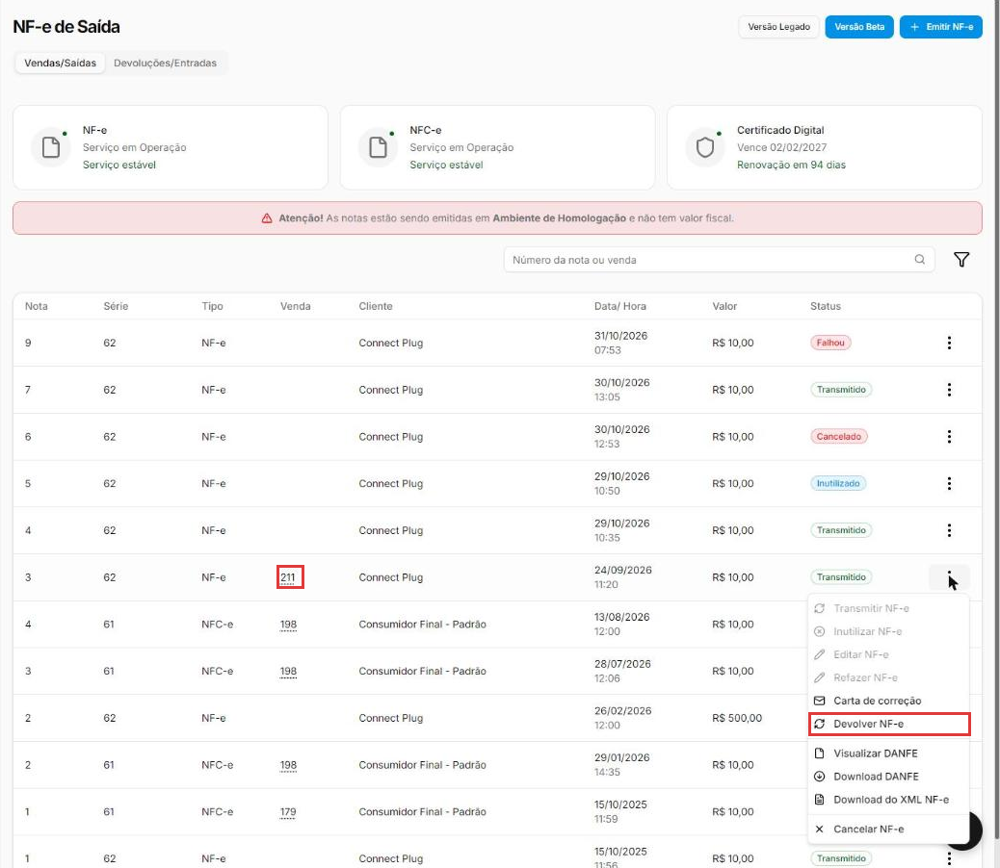
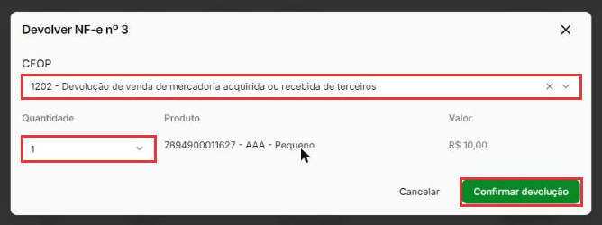
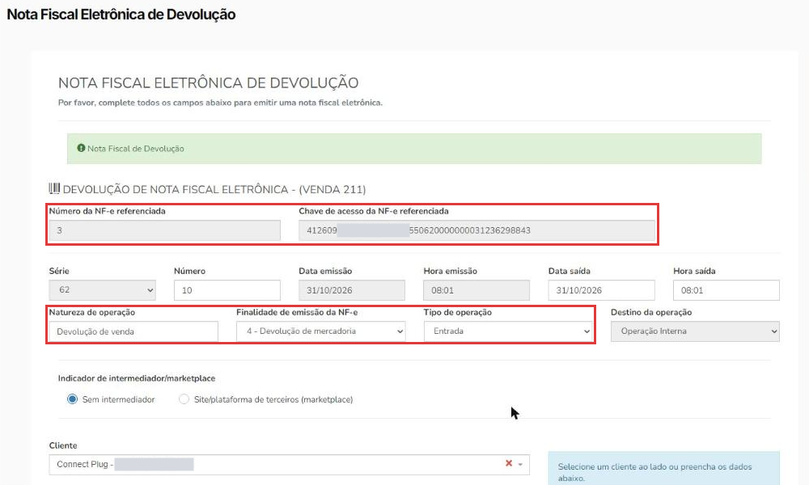
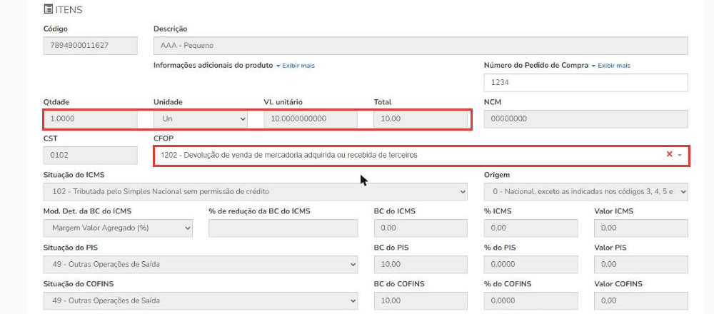
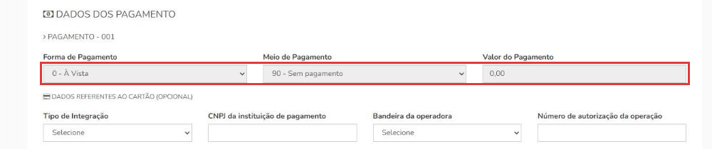
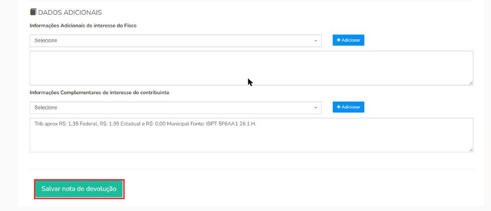
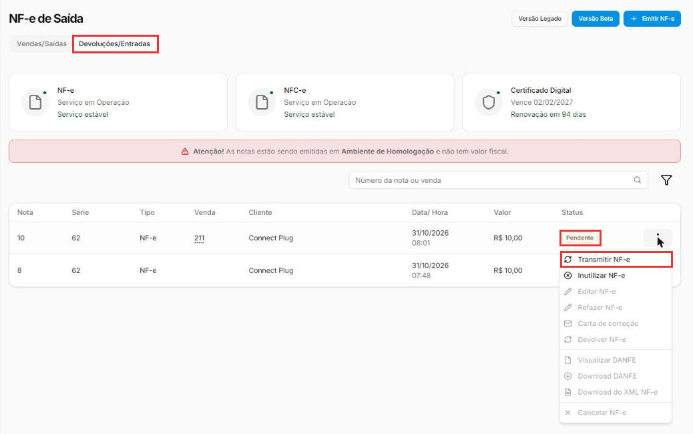
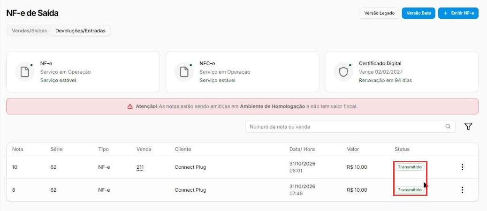

Como emitir uma NF-e de devolução
Quando uma mercadoria volta, a operação fiscal precisa ser desfeita com uma nota própria: a NF-e de devolução. Ela "anula" a nota original, total ou parcialmente, e por isso sempre aponta para ela pela chave de acesso.
Este manual mostra os dois caminhos: o atalho Devolver NF-e, que preenche quase tudo sozinho, e a emissão manual, para os casos em que o atalho não existe.
Devolução mexe com impostos: alinhe com o contador
O CFOP, a situação do ICMS e quem deve emitir a nota mudam de empresa para empresa. Use os exemplos deste manual para entender o caminho no sistema, mas confirme os códigos com o seu contador antes de emitir de verdade.
Entenda o conceito
Os dois sentidos da devolução
| Devolução de venda | Devolução de compra | |
|---|---|---|
| O que aconteceu | O cliente devolveu algo que você vendeu. | Você devolve ao fornecedor algo que comprou. |
| Tipo de operação | Entrada (a mercadoria volta para a loja). | Saída (a mercadoria sai da loja). |
| Nota referenciada | A sua NF-e de venda. | A NF-e que o fornecedor emitiu para você. |
| Destinatário | O cliente. | O fornecedor, o mesmo que emitiu a nota original. |
| Onde aparece no sistema | Aba Devoluções/Entradas. | Aba Vendas/Saídas. |
Cliente com Inscrição Estadual
Quando o cliente é uma empresa contribuinte do ICMS, em geral é ele quem emite a nota de devolução para você, e a sua loja só recebe essa nota. Confirme a regra com o contador.
As quatro peças que fazem uma nota ser de devolução
- Finalidade de emissão: 4 - Devolução de mercadoria. É ela que diz à Sefaz que a nota é uma devolução.
- Chave de acesso da NF-e referenciada. Os 44 números da nota original. É obrigatória: sem ela, não existe devolução.
-
CFOP de devolução. Ele segue uma lógica simples:
- começa com 1 (entrada) ou 5 (saída) dentro do estado;
- começa com 2 (entrada) ou 6 (saída) para outro estado.
Situação Dentro do estado Outro estado Devolução de venda comum 1202 2202 Devolução de venda com substituição tributária (ICMS ST) 1411 2411 Devolução de compra comum 5202 6202 Devolução de compra com substituição tributária 5411 6411 -
Pagamento: 90 - Sem pagamento, com valor 0,00. A devolução não é uma venda nova; o dinheiro (troca, estorno) é resolvido fora da nota.
Os produtos, quantidades e valores são os mesmos da nota original. Na devolução parcial, só mudam as quantidades.
Atalho ou emissão manual?
| Atalho Devolver NF-e | Emissão manual | |
|---|---|---|
| Quando aparece | Só nas notas geradas a partir de uma venda (com número na coluna Venda). | Sempre, pelo botão Emitir NF-e. |
| O que preenche | Nota e chave referenciadas, cliente, produtos, finalidade, tipo, pagamento. | Nada: você preenche tudo. |
| Use para | Devolução de venda feita pelo sistema. | Notas avulsas, devolução de compra ao fornecedor e qualquer caso sem o atalho. |
Nos prints, o quadrado vermelho mostra onde você deve clicar ou digitar. Dados de clientes e CNPJs aparecem cobertos de cinza de propósito.
Encontre a nota original
No menu do lado esquerdo, clique em Vendas e depois em NF-e. Na aba Vendas/Saídas, ache a nota que vai ser devolvida. Ela precisa estar Transmitido (autorizada) e ter um número na coluna Venda.
Clique nos três pontinhos da nota e em Devolver NF-e.

Escolha o CFOP e as quantidades
Na janela Devolver NF-e:
- CFOP: a lista mostra os CFOPs de entrada. Digite o número para filtrar. Exemplo: 1202 para a devolução de uma venda comum dentro do estado.
- Quantidade: quanto de cada produto está voltando. A lista vai de 0 até a quantidade vendida. Para devolver só parte da nota, diminua a quantidade; para deixar um produto de fora, escolha 0.
Clique em Confirmar devolução. Sem o CFOP, o botão não faz nada.

Confira o cabeçalho da nota
Abre a tela Nota Fiscal Eletrônica de Devolução, já preenchida:
- Número da NF-e referenciada e Chave de acesso da NF-e referenciada: a nota original. Ficam travados.
- Natureza de operação: "Devolução de venda".
- Finalidade de emissão da NF-e: 4 - Devolução de mercadoria.
- Tipo de operação: Entrada.
- Cliente: o mesmo da venda, com os dados do cadastro.
O Número da nova nota é o próximo da série: a devolução usa a mesma numeração das notas de venda.

Confira os itens
Os produtos vêm da nota original, com quantidade, valor, NCM e impostos travados, para garantir que a devolução seja igual à venda. O CFOP escolhido na janela já aparece em cada item.

Confira o pagamento
Em Dados do pagamento, o sistema já coloca 90 - Sem pagamento, com valor 0,00, e trava o campo. É o certo para devolução.

Salve a nota de devolução
No fim da tela, clique em Salvar nota de devolução. Aparece NFE inserida com sucesso e a nota entra na aba Devoluções/Entradas como Pendente: salva, mas ainda não enviada à Sefaz.

Esta tela vale uma vez só
Se você sair da tela de devolução sem salvar, ou tentar abri-la de novo, aparece "A devolução expirou ou é inválida. Reinicie pela listagem." Volte para Vendas → NF-e e clique em Devolver NF-e de novo.
Transmita para a Sefaz
Em Vendas → NF-e, clique na aba Devoluções/Entradas. Nos três pontinhos da nota Pendente, clique em Transmitir NF-e.

Quando a Sefaz autoriza, o status muda para Transmitido. Pronto: a devolução está registrada.

Devolução pela emissão manual
Use este caminho quando o atalho Devolver NF-e está apagado (nota avulsa, sem venda) ou para devolver mercadoria ao fornecedor. O formulário é o mesmo da venda (veja Como emitir uma NF-e de venda); mudam estes campos:
- Em Vendas → NF-e, clique em Emitir NF-e.
- Em Chaves de acesso da NF-e referenciada, cole os 44 números da nota original. Se a devolução juntar mais de uma nota, use Incluir outra chave.
- Em Cliente, escolha quem vai receber a nota:
- devolução de venda: o cliente que comprou;
- devolução de compra: o fornecedor que emitiu a nota original.
- Em Dados da operação:
- Natureza de operação: "Devolução de venda" ou "Devolução de compra".
- Tipo de operação: Entrada (devolução de venda) ou Saída (devolução de compra).
- Finalidade de emissão da NF-e: 4 - Devolução de mercadoria.
- Em Itens, coloque os mesmos produtos, quantidades e valores da nota original. Escolha o CFOP de devolução: na nota manual, ele vem vazio.
- Confira a Situação do PIS e a Situação do COFINS. O produto pode trazer um código de saída, como "49 - Outras Operações de Saída". Na devolução de venda, que é uma entrada, troque pelo código que o contador indicar. No teste, usamos "99 - Outras Operações".
- Em Dados do pagamento, escolha 90 - Sem pagamento e deixe o valor em 0,00.
- Clique em Salvar e depois transmita, como no último passo acima.
Boas práticas
- Prefira o atalho sempre que ele existir: ele copia os itens e os impostos da venda e evita erro de digitação.
- Devolva exatamente o que voltou. Quantidade e valor iguais aos da nota original; na devolução parcial, só a parte devolvida.
- Tenha a chave da nota original à mão antes de começar. Ela está no DANFE e no XML.
- Na devolução de compra, o destinatário é o fornecedor que emitiu a nota original. Qualquer outro gera recusa.
- Confira o estoque e o financeiro depois. A nota cuida da parte fiscal; a troca, o estorno ou o crédito do cliente são feitos à parte.
- Guarde o DANFE da devolução junto com o da venda: um explica o outro numa fiscalização.
Deu algum problema?
A opção Devolver NF-e está apagada
O atalho só funciona nas notas geradas a partir de uma venda (com número na coluna Venda). Para notas avulsas, use a emissão manual.
Cliquei em Confirmar devolução e nada aconteceu
Falta escolher o CFOP. Escolha na lista e confirme de novo.
Apareceu \"A devolução expirou ou é inválida\"
A tela de devolução vale uma vez só. Volte para Vendas → NF-e e clique em Devolver NF-e de novo.
Rejeição 1194: Destinatário da NF-e deve ser igual ao Emitente da NF referenciada
Na devolução de compra, o destinatário precisa ser o fornecedor que emitiu a nota original. Confira se o cliente escolhido é esse fornecedor e se a chave é mesmo da nota dele.
Quero devolver só parte da nota
No atalho, diminua a Quantidade de cada produto na janela Devolver NF-e (ou escolha 0 para deixar o produto de fora). Na emissão manual, coloque só os itens e as quantidades devolvidas.
Não acho a nota de devolução na lista
A devolução de venda é uma nota de entrada: ela fica na aba Devoluções/Entradas. A devolução de compra é de saída e fica em Vendas/Saídas.
A Sefaz recusou a nota
Passe o mouse sobre o status Falhou para ver o motivo. Veja Como resolver uma nota fiscal rejeitada.
Fui editar a devolução rejeitada e a chave referenciada sumiu
No teste, ao abrir Editar NF-e (ou Refazer NF-e) de uma devolução, o campo Chaves de acesso da NF-e referenciada veio vazio. Cole a chave de novo antes de salvar e transmitir.
Relacionados: Como emitir uma NF-e de venda · Como resolver uma nota fiscal rejeitada · Como cancelar, inutilizar ou corrigir uma nota fiscal
nf-e de devolução nota de devolução devolver nf-e devolução de venda devolução de compra devolução ao fornecedor cliente devolveu troca finalidade 4 devolução de mercadoria chave de acesso referenciada nota referenciada cfop 1202 2202 1411 2411 5202 6202 5411 6411 sem pagamento 90 rejeição 1194 devolução parcial devoluções entradas nota de entrada